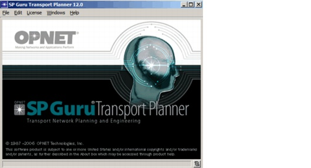
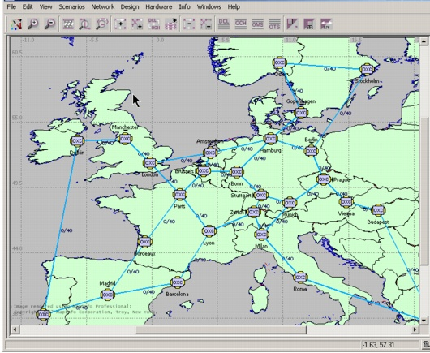
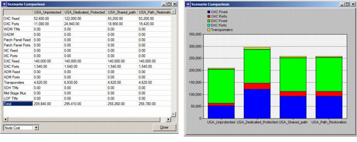
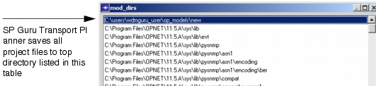
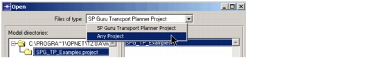

Creating a Baseline Scenario > Editor Windows > Project Editor
Editor Windows
This section describes the functions of the two primary types of windows in SP Guru Transport Planner: the Main SP Guru Transport Planner Window and one or more Project Editor windows.
Main SP Guru Transport Planner Window
The main window appears when you start SP Guru Transport Planner. This window has the following menus:
- File—Create new projects, open existing projects, run batch commands, specify model directories, and exit the program
- Edit—Edit and set global preferences
- License—Perform license operations using the License Manager (see the Licensing chapter for more information on licensing)
- Windows—Navigate all open SP Guru Transport Planner windows
- Help—Access online documentation and tutorial, open error and log files, and view general information on the program
Figure 3-1 Main SP Guru Transport Planner Window

Project Editor
Figure 3-2 shows the SP Guru Transport Planner Project Editor window. A project contains one or more scenarios. A scenario contains the data you need to run a network-design study: topology, hardware, link/fiber data, traffic patterns, cost parameters, and so on. You can extract and compare network metrics (such as network cost and capacity) across multiple scenarios within a project.
You can have multiple Project Editor windows open during a session of SP Guru Transport Planner. A Project Editor window shows one scenario within the project; to switch between scenarios within a project, choose Scenarios > Switch to Scenario > scenario_name.
Figure 3-2 The Project Editor Window

A project can have multiple scenarios. Each scenario contains of a set of network data (topology, traffic matrices, cost parameters) that is local to that scenario. The Scenarios menu includes the following operations:
- New scenario—Create a new, "empty" scenario
- Duplicate scenario—Create a copy of the current scenario
- Manage scenarios—Rename, delete, reorder, create, and duplicate any number of scenarios
- Compare scenarios—Collect a set of network statistics (such as network cost and capacity) for multiple scenarios and show the results using tables and graphs
- Switch to scenario—Show a different scenario in the Project Editor
- Scenario components—Import or export a scenario. These operations make it easy to exchange scenarios between projects.
In the Import dialog box (Scenario Components > Import), only the options Network Model or Project are relevant to SP Guru Transport Planner. In the Export dialog box (Scenario Components > Export), only the option Network Model is relevant.
Using the Compare Scenarios operation, you can inspect various network metrics across different scenarios. These metrics are: total cost, node cost, link cost, and topology information (such as capacity and utilization) at different layers.
In Figure 3-3, the scenarios are compared by node cost. When you select an item in the table, the graph updates automatically. To export graph data to an Excel spreadsheet, right-click in the graph window.
Figure 3-3 Comparing Scenarios Within a Project

Saving Projects
When you choose File > Save, SP Guru Transport Planner prompts you for the filename and destination of the project. You can save a file in any directory that is listed in your mod_dirs global preference. To view and change this preference, choose Edit > Preferences and scroll the Preferences table down to the mod_dirs entry.
Note—If you change your mod_dirs preference, always verify that your model/file directory is the first (top) directory in the mod_dirs table.
Figure 3-4 Model Directories (mod_dirs) Table

Starting with SP Guru Transport Planner version 11.0, every SP Guru Transport Planner project file (such as project1.prj) has a companion file with the extension of ".wdmg" (such as "project1.prj.wdmg"). This companion file indicates that it is a SP Guru Transport Planner project and not a project from another OPNET analysis software application. This file contains no data; it simply distinguishes SP Guru Transport Planner projects from other projects. Starting with SP Guru Transport Planner 12.0, all files for a project are kept within the same directory with a naming convention of <project>.<scenario>.
By default, the Open File dialog box shows only SP Guru Transport Planner projects with a ".wdmg" companion file. This means that you might not see projects created with older versions of SP Guru Transport Planner. To open one of these older projects, set the Files of Type to Any Project.
Figure 3-5 Opening Older SP Guru Transport Planner Files

| Home © 1987-2007 OPNET Technologies, Inc. All Rights Reserved. This software may be covered by one or more U.S. Patents. See complete patent notice in the Legal Notices section. OPNET Support Center |